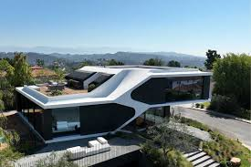
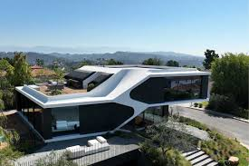
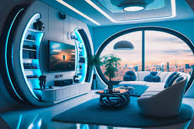
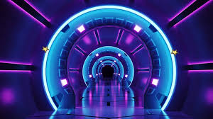

apakah Anda menerima semua bangunan modern?
Bangunan modern lebih mengutamakan fungsi daripada ornamen. Desainnya cenderung sederhana, bersih, dan efisien, tanpa dekorasi yang berlebihan
apakah Anda menerima semua bangunan modern?
Bangunan modern lebih mengutamakan fungsi daripada ornamen. Desainnya cenderung sederhana, bersih, dan efisien, tanpa dekorasi yang berlebihan
apakah Anda menerima semua rumah modern?
Rumah modern sering memiliki desain yang sederhana, bersih, dan tidak banyak ornamen. Fokus pada garis-garis geometris yang jelas dengan tampilan yang rapi dan terorganisir
apakah Anda menerima semua desain modern?
esain modern menekankan garis-garis yang bersih, tanpa ornamen atau dekorasi yang rumit. Hal ini menciptakan tampilan yang rapi dan terorganisir
